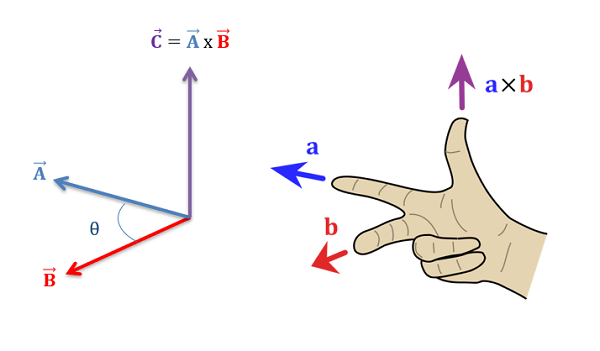

Definition 1.64.
If \(\vec{a}\) and \(\vec{b}\) are nonzero three-dimensional vectors, the cross product of \(\vec{a}\) and \(\vec{b}\) is the vector:
\begin{equation*}
\vec{a} \times \vec{b} = (\|\vec{a}\| \|\vec{b}\| \sin(\theta))\vec{n}
\end{equation*}
where \(\theta\) is the angle between \(\vec{a}\) and \(\vec{b}\) such that \(0 \leq \theta \leq \pi\text{,}\) and \(\vec{n}\) is a unit vector perpendicular to both \(\vec{a}\) and \(\vec{b}\text{.}\) The direction of \(\vec{n}\) is determined by the right-hand rule: if the fingers of your right hand curl through the angle \(\theta\) from \(\vec{a}\) to \(\vec{b}\text{,}\) then your thumb points in the direction of \(\vec{n}\text{.}\)
